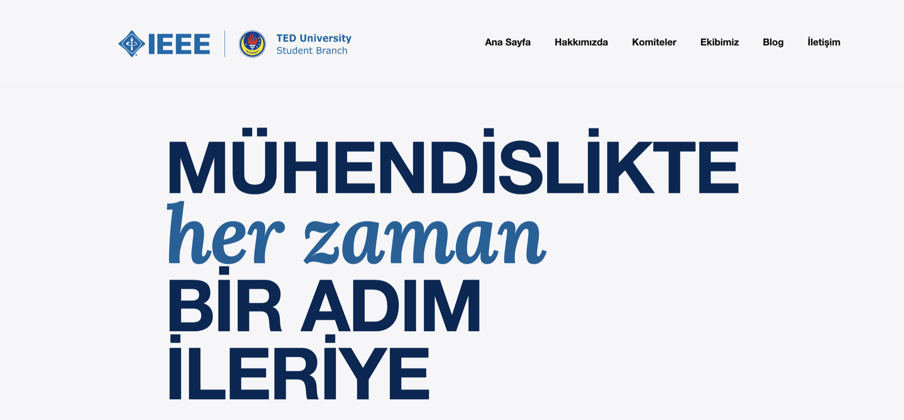
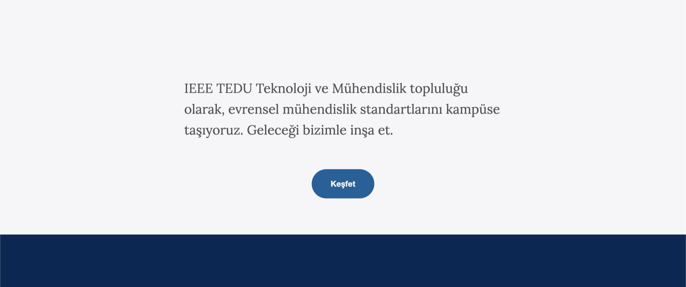
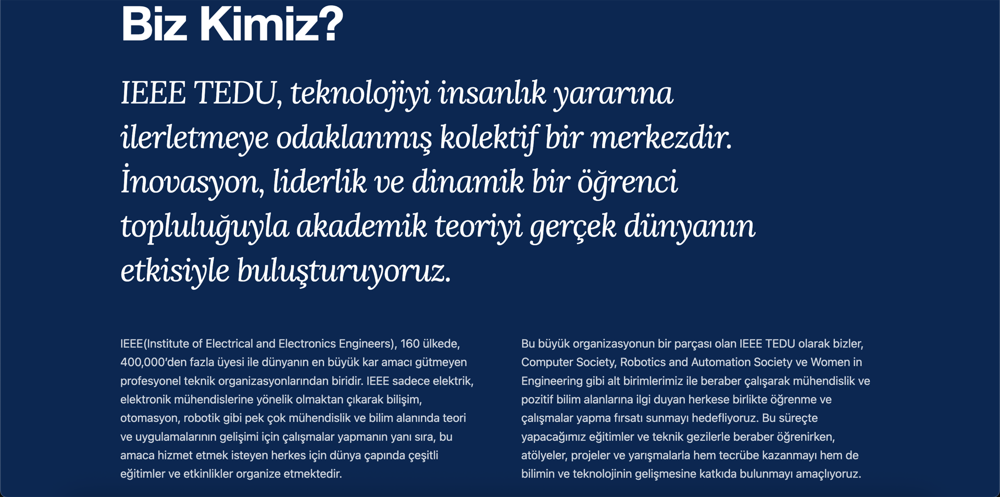
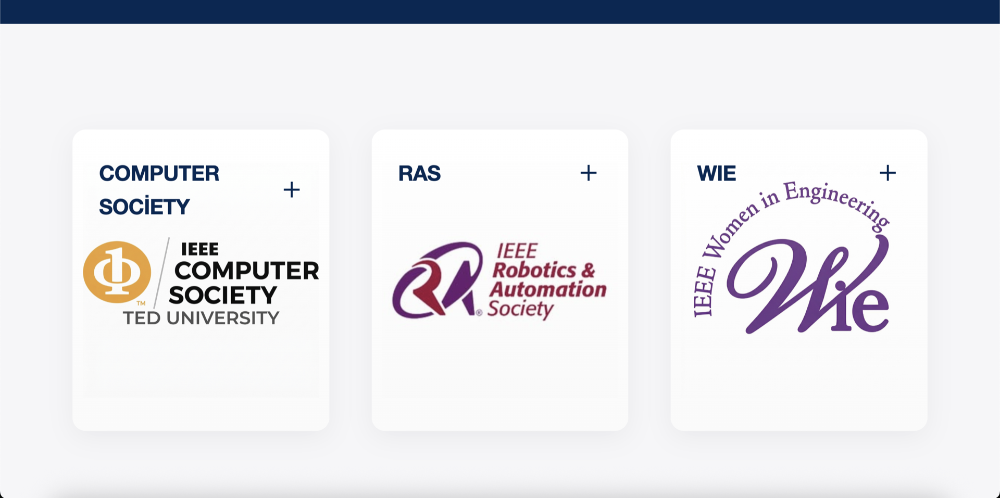
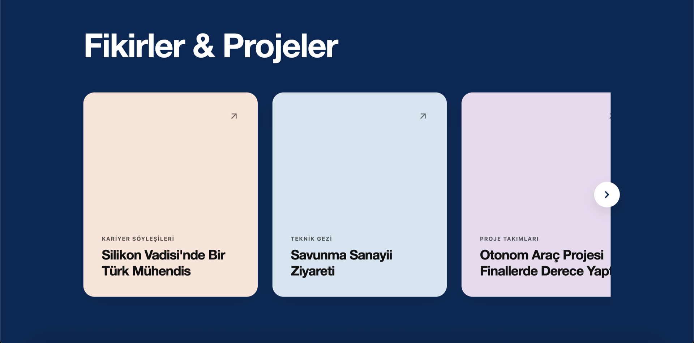
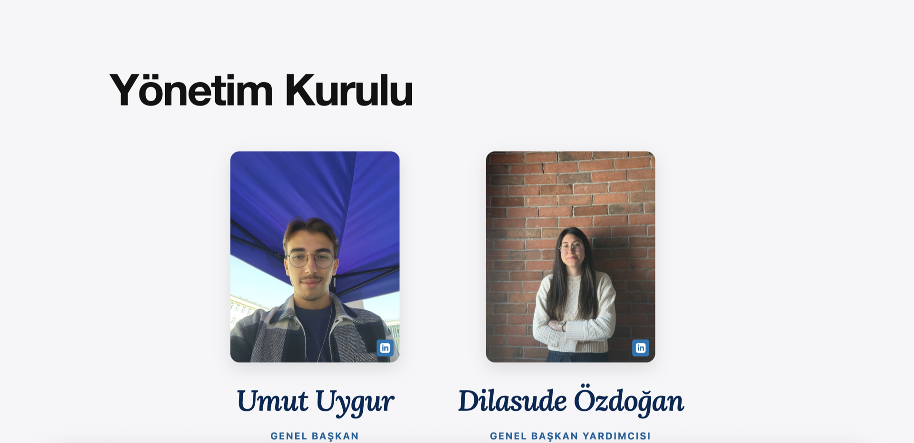
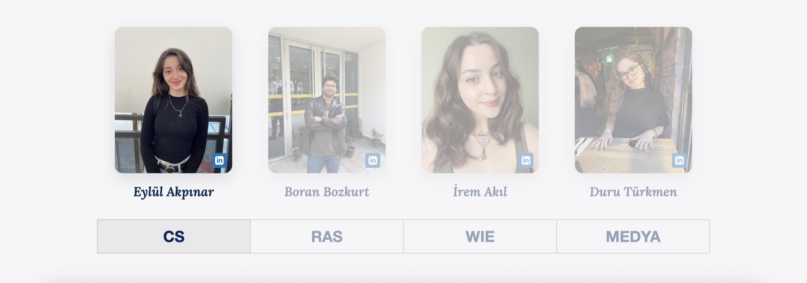
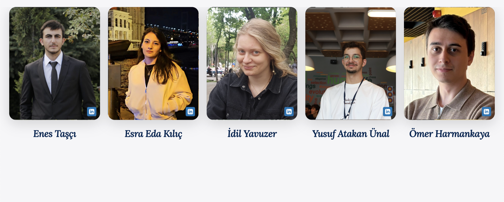
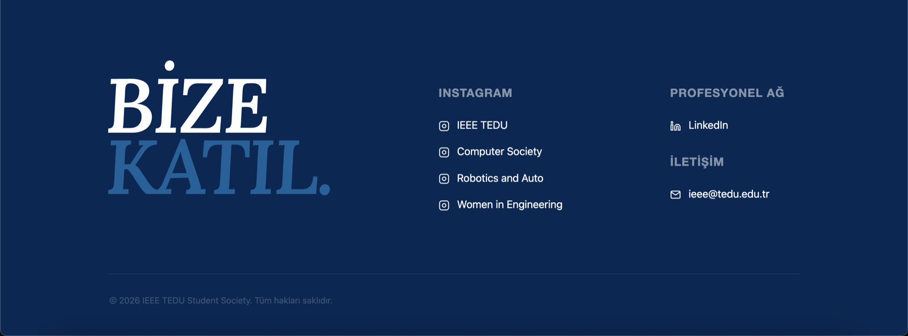
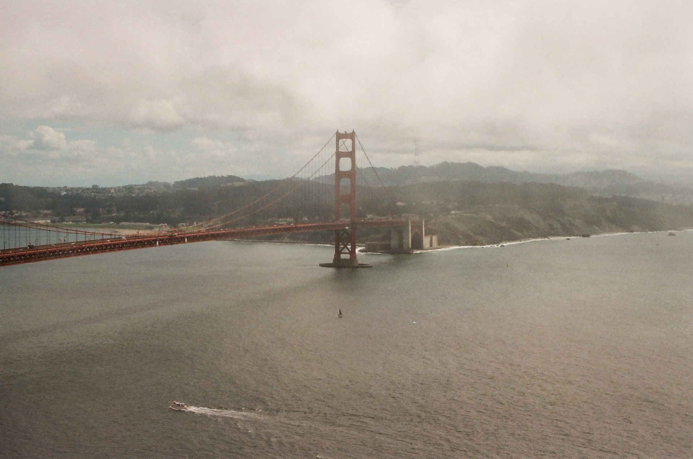

IEEE
TEDU
VizyonVision
TED Üniversitesi IEEE öğrenci kolunun dijital varlığını güçlendirmek, etkinlik duyurularını ve blog yazılarını merkezi bir sistemden yönetebilmek için modern ve dinamik bir web platformuna ihtiyaç vardı.
TED University's IEEE student branch needed a modern, dynamic platform — to strengthen its presence online and to run event announcements and blog posts from one place.
Geliştirme SüreciDevelopment
Kullanıcı deneyimini ön planda tutan, erişilebilir ve mobil uyumlu bir arayüz tasarladım. Tasarım aşamasından canlıya alınmasına kadar tüm süreci ben yürüttüm. Dinamik bir blog altyapısı kurarak içerik yönetimini sadeleştirdim; böylece topluluk üyeleri kendi etkinlik yazılarını kolayca yayınlayabiliyor.
I designed an accessible, mobile-friendly interface with the user experience first in mind. I ran the whole process myself, from design through to deployment. I also set up a dynamic blog that made content easy to manage, so members can publish their own event posts without needing help.
SonuçResult
Site şu an aktif olarak kullanılıyor ve topluluğun etkinliklerini, yazılarını tek bir yerden yönetebildiği bir merkez hâline geldi. Benim için bu proje, bir tasarımı fikir aşamasından gerçekten insanların kullandığı canlı bir şeye dönüştürmenin pratiğiydi.
The site is in active use and has become the place where the community runs its events and writing from a single spot. For me, the project was practice in taking a design from an idea to something live that people actually use.









